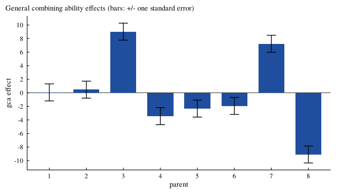

Overview
DiallelAnalysisR analyses diallel crosses of plant-breeding experiments laid out in randomized complete blocks:
-
Griffing(): Griffing’s (1956) Methods 1 to 4 with fixed or random effects: the analysis of variance of general and specific combining ability and reciprocal effects, the effects with their standard errors, and the variance components; -
Hayman(): Hayman’s (1954) analysis of variance, the Wr-Vr analysis and graph, the components of variation D, H1, H2, F, h2 and E, genetic ratios and tests of the additive-dominance model; -
PartialDiallel(): crosses between two groups of parents: combining ability of each group and of the crosses; -
GriffingMeans(): Griffing’s analysis of a published table of cross means, with the error from the paper; -
Heterosis(): mid-parent, better-parent and standard heterosis with t tests; -
Griffing(..., Reciprocal = "split"): Cockerham and Weir’s maternal and non-maternal reciprocal effects; -
GardnerEberhart(): Gardner and Eberhart’s (1966) Analyses II and III; -
LineTester()andNCDesign(): line by tester analysis with proportional contributions, and North Carolina designs I, II and III; -
GriffingEnv(): a diallel over several environments, with gca by environment and sca by environment; -
plot(fit, which = "biplot"): a biplot of the cross means showing the best combiners and crosses; -
DiallelSim()andDiallelPower(): simulated diallels for teaching and power for planning the replicates; -
da_export(): the main tables in Word, LaTeX, HTML, Markdown or CSV for papers; -
DiallelApp(): all of the above in a web browser, without code.
The package has been on CRAN since 2016 (version 0.1.1, 2016-04-09). Version 1.0.0 keeps every function name, argument and result component of earlier versions, so existing scripts run unchanged. It corrects the standard errors of Griffing’s analysis and several results of Hayman() and PartialDiallel() (see NEWS), adds plots and methods to every result, the analyses above, complete help pages with the formulas, fifteen vignettes in HTML and PDF, a comparison with the published values of Griffing (1956), and is many times faster for larger diallels.
Installation
install.packages("DiallelAnalysisR")
# development version
# install.packages("remotes")
remotes::install_github("myaseen208/DiallelAnalysisR")Quick start
library(DiallelAnalysisR)
fit <-
Griffing(
y = Yield
, Rep = Rep
, Cross1 = Cross1
, Cross2 = Cross2
, data = GriffingData1
, Method = 1
, Model = 1
, Reciprocal = c("combined", "split")[1]
)
fit$ANOVA Df Sum Sq Mean Sq F value Pr(>F)
gca 7 3804.6 543.52 18.8868 <2e-16 ***
sca 28 22060.8 787.89 27.3783 <2e-16 ***
reciprocals 28 365.5 13.05 0.4536 0.9923
Error 189 5439.0 28.78
---
Signif. codes: 0 '***' 0.001 '**' 0.01 '*' 0.05 '.' 0.1 ' ' 1
round(x = fit$GCA, digits = 2)
plot(fit)
Learn more
- Vignettes:
browseVignettes("DiallelAnalysisR"), starting withDiallelAnalysisR_01_getting_started; each is available as HTML and as PDF. - Site: https://myaseen208.com/DiallelAnalysisR/
- Notation:
da_notation() - Shiny application:
DiallelApp()
Citation
Yaseen M, Eskridge K, Barbosa P, Guo Y (2026). _DiallelAnalysisR:
Diallel Analysis, Heterosis and Related Mating Designs_. R package
version 1.0.0 (first released 2016),
<https://CRAN.R-project.org/package=DiallelAnalysisR>.BibTeX:
@Manual{DiallelAnalysisR,
title = {{DiallelAnalysisR}: Diallel Analysis, Heterosis and Related Mating Designs},
author = {Muhammad Yaseen and Kent Eskridge and Pedro Barbosa and Yuhang Guo},
year = {2026},
note = {R package version 1.0.0 (first released 2016)},
url = {https://CRAN.R-project.org/package=DiallelAnalysisR},
}